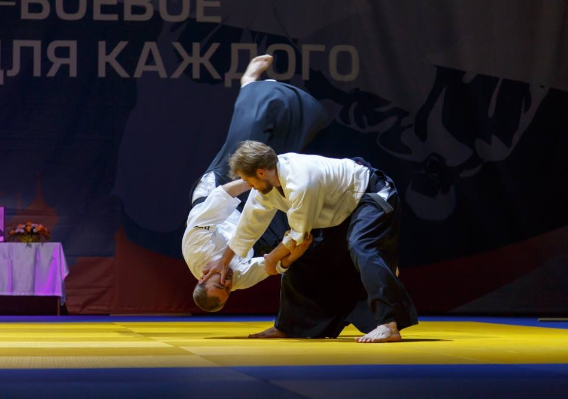
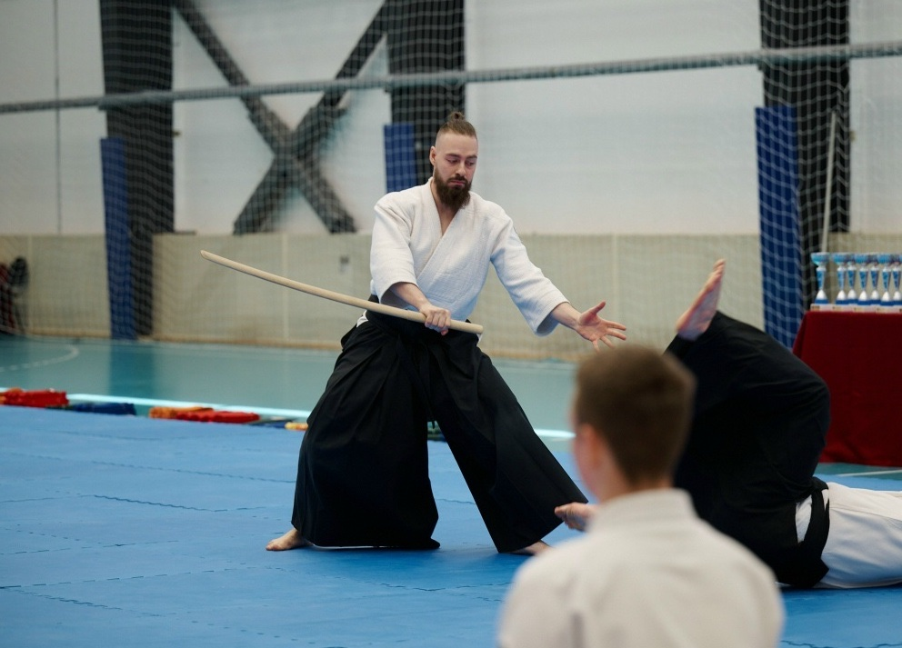
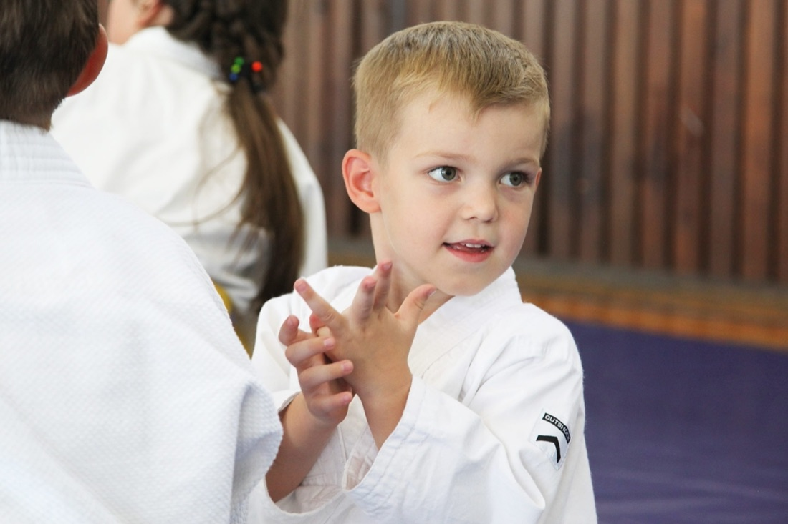
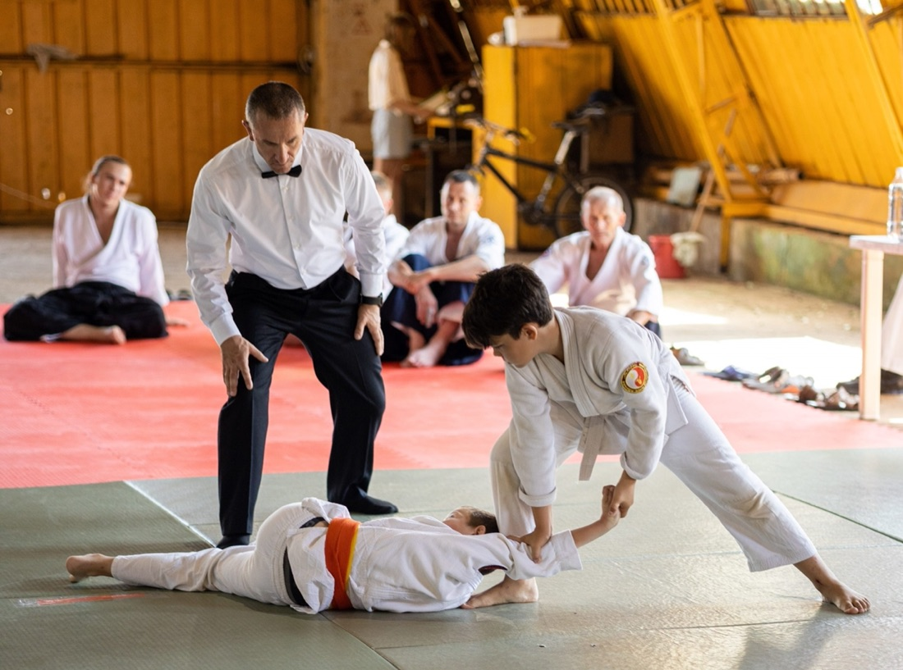
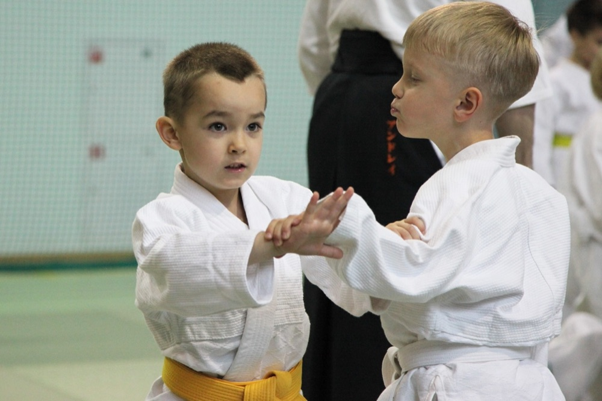
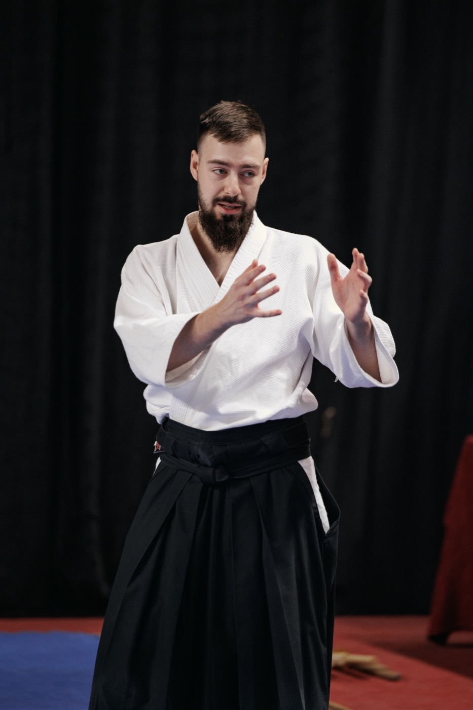
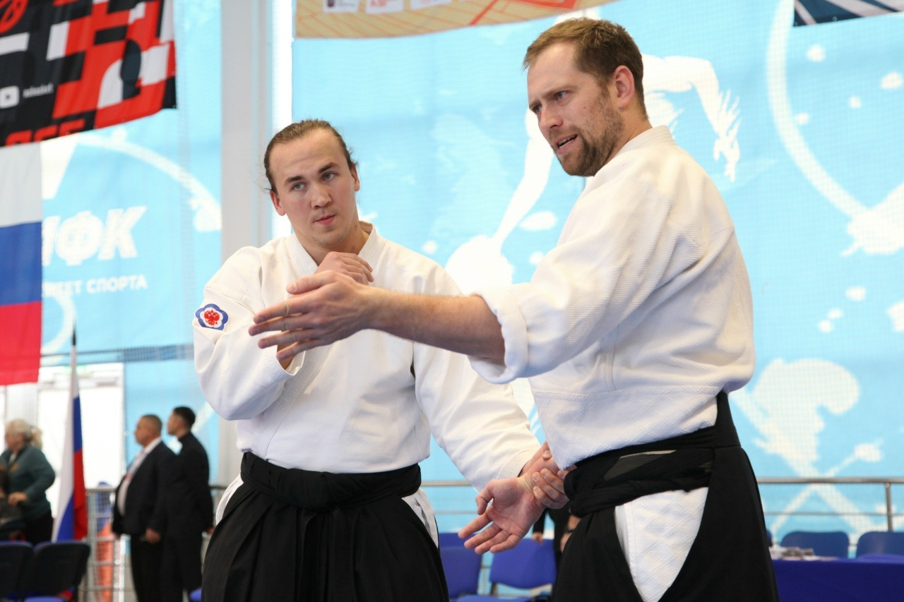

Тело
Координация, равновесие, осанка, правильное дыхание. Безопасное падение — навык на всю жизнь: гололёд, велосипед, лестница.
Школа айкидо · Москва
Айкидо, в котором есть место традиции, спорту и прикладному мастерству. Индивидуальные и групповые занятия, семейные тренировки — под руководством наставников проекта «Спорт как искусство».
Записаться на тренировку
О школе
Айкидо — японское боевое искусство: сила рождается из внимания, дыхания и точной работы тела. Мы преподаём традицию будо так, чтобы она работала на современного человека.
В группе занимаются дети с 5 лет, подростки и взрослые — от первых страховок-укэми до аттестаций на степени. Приходят семьями: айкидо — путь для человека любого возраста и подготовки.
Три опоры, из которых складывается рост занимающегося — в теле, характере и отношении к людям.
Координация, равновесие, осанка, правильное дыхание. Безопасное падение — навык на всю жизнь: гололёд, велосипед, лестница.
Уверенность, самоконтроль, спокойствие в стрессе. Эмоции под контролем — на татами и в жизни.
Этикет, взаимоуважение, внимание к партнёру. Занятие начинается с этикета и заканчивается этикетом.

Илья Бушманов · занятие с группойАйкидо для детей
Айкидо учит стоять твёрдо, чувствовать момент и решать конфликт без драки.



Один путь — три измерения: традиция, спорт и прикладное мастерство. Каждый занимается в своём ритме и по своим целям.

Илья БушмановЭтикет, ката и работа с оружием — боккэн, дзё, танто. Занятие живёт в ритме японского додзё: поклон, техника, благодарность партнёру. Это фундамент, на котором держится всё остальное.
Айкидо бывает и соревновательным: спортивное айкидо в России — это аттестации, турниры и показательные выступления. Кто хочет проверить себя — мы готовим к стартам и поддерживаем на татами.
Техника работает за пределами зала: дистанция, баланс, выход из захвата, безопасное падение. Навыки, которые дают спокойствие в городе и уверенность в конфликтной ситуации.
Традиция даёт основу, спорт — проверку и азарт, прикладное — уверенность в повседневной жизни. Каждый собирает свою практику из этих граней.
Айкидо для взрослых
Взрослые занимаются айкидо ради движения и осанки, спокойной головы в стрессе, спортивного азарта и семинаров. Партнёры на татами становятся товарищами: вместе разучиваете технику и растёте — от первой страховки до выступлений.

Иван Егоров и Николай Лунев · семинарКак проходит занятие
Занятие выстроено от простого к сложному и заканчивается так же, как начинается, — этикетом.
Приветствиеэтикет и настрой: практика начинается с уважения к залу и партнёрам.
Разминкасуставная гимнастика, дыхание, подготовка тела к работе.
Базастраховки-укэми, стойки, перемещения и принцип движения от центра.
Партнёрствотехника в парах: учимся доверять, чувствовать момент и заботиться о партнёре.
Завершениеспокойная практика, итоги и этикет — до следующей тренировки.
Вопросы и ответы
Дети приходят с 5 лет. В айкидо занимаются от 5 до 70+: есть группы детей, подростков и взрослых, часто тренируются семьями.
Травмоопасность минимальна: в традиционном айкидо нет ударов, работа парная и контролируемая. Обязательная база — страховки-укэми, умение безопасно падать.
Айкидо развивает уверенность, самоконтроль и координацию. Есть и спортивная сторона: турниры, аттестации, показательные выступления. Техника учит точно контролировать ситуацию и действовать без агрессии.
Да. Отбора по физическим данным нет: занимается любой ребёнок. Прогресс меряется собственным ростом — ребёнок сравнивает себя с собой вчерашним.
Удобная одежда и желание. Форму и инвентарь на старте покупать не нужно. Записаться можно через Telegram или по телефону.
Запись открыта
Индивидуальные и групповые занятия айкидо для детей, подростков и взрослых в Москве. Ответим в мессенджере, подберём группу и удобное время.
Записаться на тренировку